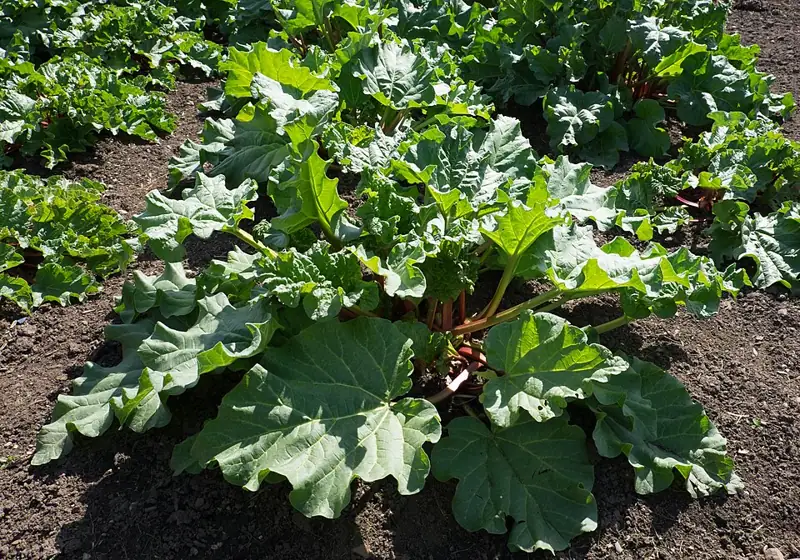

Growing rhubarb for its stalks, since the leaves are poisonous
Rhubarb is one of the easiest perennials to plant, and the only common vegetable where part of the harvest is toxic. Which part, why, and the myths worth ignoring.

Photo: DeFacto · CC BY-SA 4.0, via Wikimedia Commons.
What you need
A permanent spot you will not dig, because this plant stays for a decade or more
Full sun
A knife, and the habit of cutting the leaf off in the garden before you go to the kitchen
Rhubarb is about the easiest thing in this whole library. You plant a crown once, keep the grass off it, and it comes back every spring for a decade or more. It’s one of the few crops that does well on neglect.
It’s also the only common garden vegetable where you handle a poisonous part of the plant at every harvest. The ordinary way of carrying it into the kitchen brings that part along with you.
What's the one rule I can't ignore with rhubarb?
Rhubarb leaf blades are poisonous and must never be eaten. Only the leafstalks (the petioles) are edible. Harvest the stalks and cut the leaves off.
This one is about eating safely, not how the plant grows. The planner suggests it.
How it works: The leaf blades hold a toxic concentration of oxalic acid (and, per NDSU, anthraquinone glycosides), which the edible petioles carry only in trace amounts. Oxalic acid binds calcium and can damage kidney function; eating the blades causes cramping, nausea and, in quantity, can be fatal. The stalks are safe because the toxins concentrate in the leaf.
Evidence: checked against 5 sources in the research-based literature.
The leaves, however, contain a toxic amount of oxalic acid and are poisonous. The ensuing cramps, nausea and sometimes death from ingestion suppressed interest in the plant for about two hundred years.
The split is clean, and it’s the same in every extension source behind that card. The leaf blade, the big crinkled sheet at the top, holds a toxic concentration of oxalic acid and, according to NDSU, anthraquinone glycosides alongside it. The petiole, the stalk you eat that looks like pink celery, carries only trace amounts of the same compounds. One part is food and the other is not.
Oxalic acid binds calcium, and in quantity it can damage the kidneys. What poisoning looks like, per NC State’s toolbox, is abdominal cramps, burning of the mouth and throat, headache, weakness, nausea and vomiting, and in enough quantity it can be fatal. That toolbox rates the severity medium, and notes it’s toxic only if large quantities are eaten.
So there’s no need to be frightened of rhubarb. Just be tidy about it.
The habit worth building
Cut the leaf off in the garden. It takes a second, the toxic part never comes into the house, and it rules out a whole category of accident: a leaf left on the counter beside the stalks, a helpful person adding “the green bit” to the pot, a child who has just learned that rhubarb is food.
You’ll also see the advice to pull rhubarb instead of cutting it, twisting the stalk away from the crown. That’s for the plant’s health, and it fits with the habit above. Pull the stalk, then take the leaf off where it fell.
What common rhubarb advice should I ignore?
Both of these sit in the corpus’s record for this rule as deliberate exclusions. They were looked at and left out, which is different from claims nobody considered.
“A hard freeze moves the toxins from the leaves into the stalks.” This is stated widely, including by one extension service. NDSU went looking for the studies and reported that it could find none confirming or disproving it. So nobody has shown this either way, and this site doesn’t carry a contested claim as though it were settled. If your rhubarb has been through a hard freeze, the sources don’t support telling you the stalks are now dangerous. They equally don’t support telling you they’re definitely fine.
“Rhubarb leaves are toxic to livestock.” Asserted in plenty of places, but the corpus found it only in non-extension secondary sources, so it waits for a source of the same grade as the five behind the main claim. Absence here means “not established to this site’s standard.” It doesn’t mean “false.”
This guide can’t answer a third question, whether the leaves are safe to compost. Nothing in the corpus grades it and no source behind this rule addresses it, so there’s no confident answer to give.
Where should I plant it?
Rhubarb is a perennial, and perennials have one siting rule that outranks everything else:
Perennial members must not be sited in ground that is annually turned or rotated.
A rhubarb crown put into a bed you rotate gets destroyed by the first season’s digging. It needs ground you’ve decided not to disturb: a permanent border, a corner, or the end of a bed you’ll work around. Full sun, and give it more room than the first-year plant seems to need, because it will fill it.
This is the same decision the fruit tree guild guide opens with, and for the same reason. A rotation works by moving crops and a perennial works by staying put, so the two can’t share ground.
The short version
Plant it once, somewhere you’ll never dig. Harvest the stalks. Cut the leaves off before you leave the garden and drop them on the ground there. And when the internet tells you something confident about frost and toxins, notice that the extension service that went looking couldn’t find a study either way.
What this guide can’t answer yet
These questions have no graded answer here yet. They are collected across the library on the open questions page.
Does a hard freeze move the toxins from the leaves into the stalks?NDSU found no study confirming or disproving it; the corpus does not carry a contested claim as settled
Are rhubarb leaves toxic to livestock?asserted widely but found only in non-extension secondary sources, below this site's evidence standard
Are rhubarb leaves safe to compost?nothing in the corpus grades it, and no source behind the leaf-toxicity rule addresses composting
Further reading
Good places to read more about the technique on this page. The grade on each card comes from that card’s own sources.